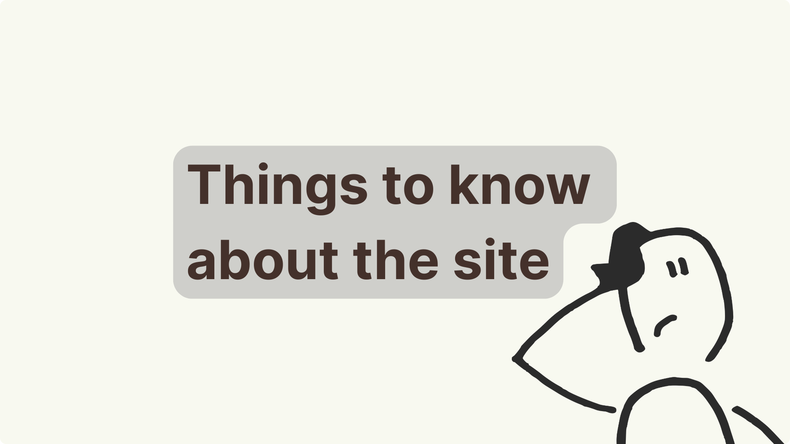
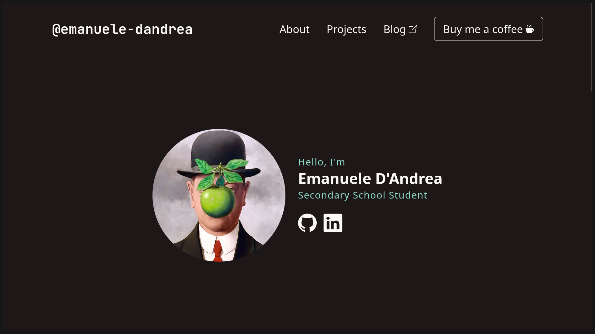

Is this the beginning?¶

This will be the first blog post, which I will use as a test to get started and get a little bit of practice with markdown. I will also try to explain to you what the goals of this little personal project are and how it was born.
Things to know about this project¶
This project was supposed to be a school assignment, but I decided to make it something more. At the beginning it was supposed to be a simple personal website made in HTML and CSS, but I was intrugued by the idea of creating a blog, and after being inspired by several personal sites of amazing people, I decided I wanted to write it simply using markdown. You may wonder why you should do this? And I answer you by telling you that it is a more pragmatic and comfortable way to interface with this world, given that the functions that markdwon offers are multiple and truly useful.
How I did it¶
I won't go into too much detail, but first of all I'll link you to the framework I used and which was very useful for me in creating this blog. To do this I used Material for MkDocs, which allows you to create a static site that apparently has the properties of a dynamic one, but obviously it's not exactly the same thing. If you are interested in this world, you are free, in fact I urge you to go to their site where there is a step by step guide on how to create your documentation or your blog and you will find all the information you need. I also want to point out that this is just one of the many solutions that can be found on the web. Another one I know of is Jekyll, which also allows the creation of static sites and the use of markdown.
Hosted with GitHub Pages¶
I don't currently have a server or a VPS to host the site on, so I've been making do with GitHub Pages, which isn't bad at all for hosting static sites. Again, I encourage you to check out GitHub Pages if you want to host your own small project or anything else on it.
About GitHub Pages
For greater transparency, I also recommend you go to the about section related to github pages, which I will also link to for you. I hope your doubts will be further clarified.
Things you need¶
Below I list the things you should know to get started:
- know how to use git;
- you should have
pythoninstalled on your computer; - know something about
HTMLandCSSif you want more personalization; - know how to use properly markdown.
My portfolio¶
Let's not forget that the blog is directly linked to my portfolio which is also part of this project. The project has a repository on GitHub that is obviously public and accessible to everyone. Who knows, maybe someone would like to contribute 😀.

Source Code¶
The project is open source and of course you can get it on github respecting the MIT license.
The future of my blog and portfolio¶
We are only at the beginning and I already speak of the future, really fun. Obviously I am aware that I still have a lot to learn and starting from the portfolio to get to the blog I know there are many things to improve (I also trust in your support). But with time and experience and a little commitment I hope to learn new notions. The purpose of this blog is to talk about my projects, computer science and many other beautiful things, I wanted to tell you 😆😆.
Final considerations¶
I would like to point out that this is not a real guide, it is simply my experience that could not be completely accurate, that's why I decided to link you to all the material you need, in this way you will learn everything you need.